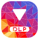
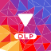

O gradiente da primeira solução desconstruído em 72 triângulos de cor plana. O tom de cada faceta vem da posição no eixo da luz (amarelo no canto inferior esquerdo → azul no oposto) com um desvio próprio de cada triângulo, por isso as cores repetem-se pela malha como num cristal em bruto iluminado. A passagem quente inclui o vermelho do YouTube (#FF0000). Sem gradientes, sem verde e sem triângulo de play.

O glifo branco mantém-se legível porque a zona central cai em rosa, roxo e azul.
Em grayscale as facetas mantêm níveis distintos e o glifo continua legível.

A versão maskable sangra até aos bordos e o glifo fica a 86%.
Ficheiros: brand/logo-flat.svg,
brand/logo-flat-maskable.svg (gerados por tools/gen_logo_flat.ps1).